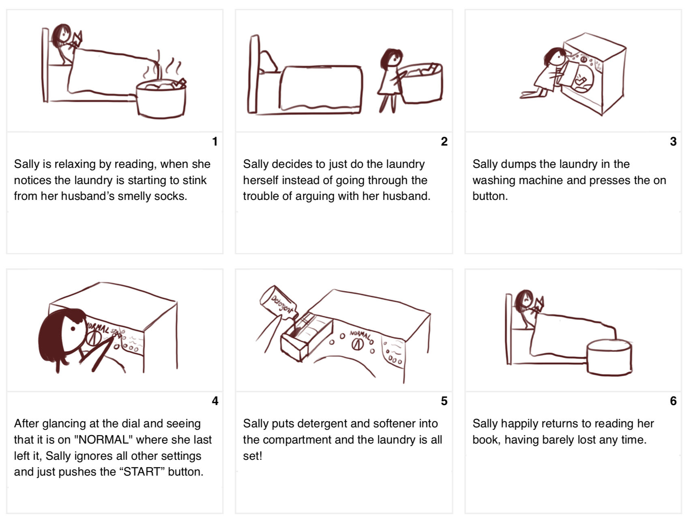

Washing machine interfaces come in various designs. What type of interface suits the average user?
Unfortunately, due to Covid-19 concerns, I was unable to observe a washing machine in its natural wild environment the laundromat. Instead, I chose this washing machine in my house :
I observed 3 people from my group of friends and family use my washing machine on their own without any interaction with me, and then interviewed them about their experience.
Observations Summary :
- User 1 and User 2 opened and loaded the machine quickly, while User 3 first looked at the buttons then pushed the door before finally pulling the door open.
- After loading, all three users quickly turned on the machine and started the washing cycle.
- User 3 looked at the buttons on the right section of the interface, while User 1 and User 2 only looked at the buttons in the middle.
- All users only used the buttons in the middle.
- All users looked at and left the middle dial in its original position, on "NORMAL CASUAL."
Interview Questions :
- What do you use the machine for? What kind of clothes do you wash with it?
- What do you expect or want of the interface? What is most important?
- Please explain to me how to use the machine.
- What has been your experience with the interface? What do you like and dislike about it?
- What parts of the interface are clear or unclear?
- Describe your ideal interface for this machine. What is most important?
Interview Response Summary :
All three users found the middle section of buttons to be clear and easy to use. They found the right side to be more complicated and some users were confused about how to use the right side, but this did not interfere with their ability to wash laundry. Some users gave conflicting statements throughout their interview.
User 1 Comments :
- Button layout is perfect, interface works well and is clear, but would prefer simpler overall interface
- Was surprised to discover new functionality while explaining how to use machine
- Says it is difficult to understand extra functionality because she is not a native English speaker
User 2 Comments :
- Interface is very clear and very easy to use
- Doesn't know what buttons on the right do and never uses them, but likes that the option is there
- Interface is complicated and fancy, mentions "maybe it's more better for a housekeeper or someone professional" several times
- Doesn't care if interface is simple or detailed, both ways are fine for him
User 3 Comments :
- Button interface is clear, but door design is "really bad" because there is no label or indicator
- Ideal interface is a touch screen and bluetooth
- Would prefer a super straightforward interface that tells accurately and exactly when the laundry will be done
Personas :
I created 2 personas based on these interviews to better understand users : Simple Sally and Cool Dan.
Simple Sally
Simple Sally is a retired mother with adult children. She is easygoing and tends to choose the path of least resistance.
As someone who just wants things quick and simple, she doesn't want to explore or read the details. This makes her uninterested in complicated interfaces and skip over anything unnecessary.
All three users had in common that they liked clear, easy to user interfaces and did not make use of the additional features on the right of the washing machine, so I made a persona focused on keeping it simple and easy.
Cool Dan
Cool Dan is a college senior studying economics. He likes high tech gadgets, although he only uses them for their basic functionality.
Cool Dan faces a conflict when he picks an interface to use, as his tastes conflict with his actual use of the interface. He wants an interface that is complex and has lots of functionality, yet is simple and easy to use.
Cool Dan is based on a mix of User 2 and User 3. User 2 and User 3 both enjoy the option of additional functionality, but tend to not use it.
Storyboarding :
I created a storyboard to better understand a user's journey interating with the washing machine.
Takeaways :
Throughout this exercise, I learned a lot about understanding and empathizing with users. I found it very interesting that what users say and what they are drawn to do not necessarily match with what they will use.
For example, User 1 called the interface "perfect" but also later expressed that she prefered a simpler interface and had difficulty understanding parts of the interface. User 2 first called the interface "clear and easy to use," then called it "complicated and fancy." He staid he likes the control that the interface gives, yet he also says that he does not use any buttons apart from the basic controls in the middle.
I learned that it is not enough to only listen to the preferences the users say they have, it is also important to observe the users actions and what they actually do when using an interface.